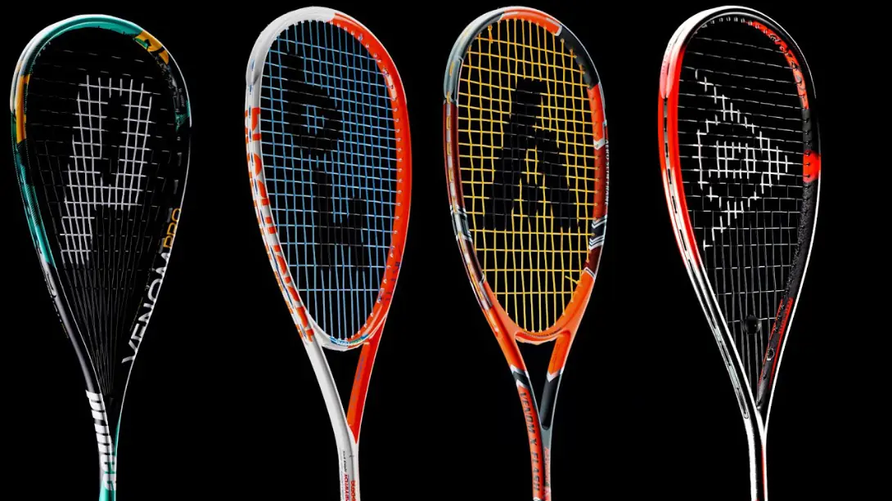
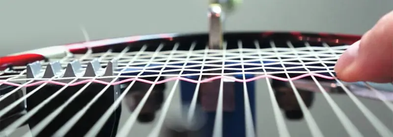

Is It Time To Switch Up Your Squash Rackets?
I’ve always been of the opinion that players should own and use 2 rackets, with both rackets being the same brand, model, weight and balance. However, recently I have been questioning that concept.
There are many things that professional squash players do that club players should aspire to and also some things that club players should avoid., but that’s for another article. One of the things that I have believed for a long time is that club players should have 2 of exactly the same rackets. Let me explain with some examples and then talk about why that might not be the best method for you.
Which one of these would you like?
None of the points I make below is related to beginners. If you are just starting to play squash, don’t worry about owning two rackets, just find something in your budget that is neither too light nor too heavy. It’s more important to learn good technique than it is to worry about equipment.
Let’s Start With The Exception
Let’s say you have been playing squash for about a year and love it (of course!), and have decided to spend 60 Euros to buy a new racket. I am NOT suggesting that you buy two 30€ rackets instead. That would be silly. You only really need two rackets if you are playing competitively. That doesn’t mean you can’t own two rackets if you don’t, it just means you don’t NEED two rackets. I have seen plenty of recreational players (just play once or twice a week with the same friends) that have 3 or more rackets – if you have the spare cash, great!
What About if I spend 100€ Or More?
I have used 100€ as an example, but if could be a little less or more. Now things become a little more interesting because I see that you have three options:
1. Buy one expensive racket i.e. 100€
2. Buy two rackets of the same rackets i.e. 2 x 50€
3. Buy two different rackets:
3.1 Both rackets of about the same price, but different attributes 2 x 50€
3.2 Two completely different priced rackets e.g. 70€ and 30€
So essentially that’s 4 choices, each with their own advantages and disadvantages. Let’s briefly examine each one.
One Expensive Racket
If you choose to do this then you probably get the best racket, but bear in mind that more expensive doesn’t mean better. Finding the right racket for you is more important that buying the most expensive one you can afford.
If you do find the right one and it costs this much, you could try to get a second one in a sale or maybe you will be lucky and receive one as a present – assuming you tell people that you want one! But notice that I immediately assumed you wanted a second one, and this comes to the heart of the problem. If you play competitively, then you need a second racket because if the one you have breaks during a match, you might have to forfeit the match. You opponent is under no obligation to lend you one of theirs!
Two Of The Same Rackets
As I have already said, this has been my stance for a long time. I believe that ambitious players who want to become the best they can be, and by that I mean all ages and starting standards, should adopt this policy. Elite performers need consistency in their equipment. Changes to tactics are performance is done with skill and technique.
If you break a string or even the frame during a competitive match, you need to be able to take the other squash racket out of the bag and know that it is going to respond in almost exactly the same way as the one that broke. That’s why professional racket sports players (tennis, squash and badminton mainly) spend so much time and effort finding the right stringer.
Don't forget to have your rackets restrung regularly.
Two Different Rackets
As you have seen, this is the point where you have two sub-options: spend the same on both rackets or spend more on one than the other. The factor that decides which of those options you choose is the reason for choosing this option in the first place. That is to say, that if you decide to have two different rackets, you have probably done it so that you have tactical choices. Let’s keep it simple and say one racket is for control and the other is for power.
As I keep saying, you should be able to generate power AND control with just one perfect racket, but perhaps you are a club player that doesn’t really have the time to develop better squash technique or spend more time training. The easier option is to use different rackets. This way you can decide which racket to sue based on your opponent and the tactical approach required on the day.
In this case, I would probably recommend spending more money of the control racket than the power. I feel it’s easier to find a cheaper racket that is powerful than it is to find a cheap racket that has a lot of control. In this case, you might opt for a traditional-shaped racket for the control and a teardrop-shaped racket for the power, but that is your choice.
Final Thoughts
I would recommend only getting two rackets if you play competitively or have some spare cash. There’s no need to have two rackets and expect that at some point in time, a string will break during a match and you may have to stop playing and wait for it to be repaired. Some restringers can do “while you wait” others, within a day etc.
If you do want two rackets and feel that you can adapt to different rackets quickly, then two different rackets could be the answer for you. Play with lots of different rackets as you can by asking to test opponent’s rackets. Some people, and I include myself in that group, are able to adapt very quickly to most rackets. Others, and you might be one of those people can’t, and in that case two of the same racket might be better.
Continue Reading
• Previous: 3 Things Squash Players Can Learn From Tennis Players
• Next: Solo Squash Hitting Is My Meditation
• Random: Take A Chance!
• Popular: What Is The “Front/Back” Squash Conditioned Game?